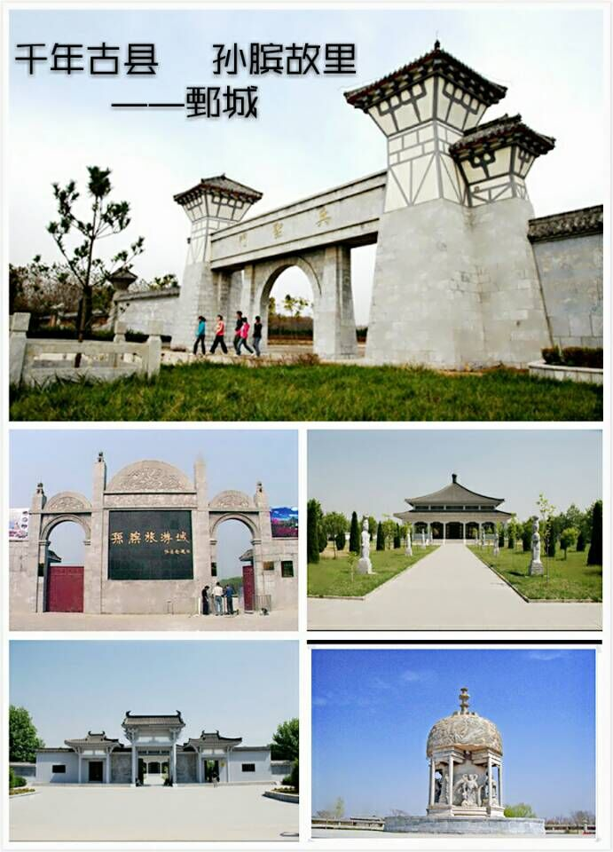
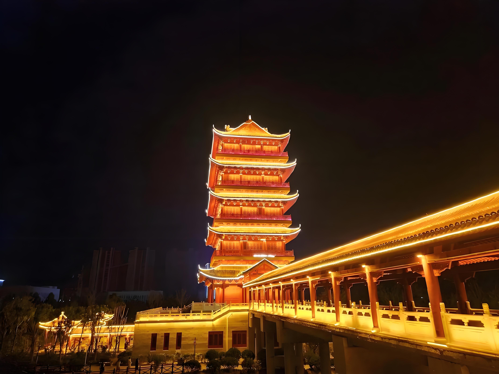

城市概况
鄄城，这座位于山东省西南部的城市，历史悠久、文化底蕴深厚，自然景观独特，产业发展蓬勃，是一座融合了历史文化、自然风光与现代产业的魅力之城。
历史文化

历史遗迹
从历史维度来看，鄄城堪称中华民族的发祥地之一，历史源远流长，境内留存着诸多珍贵的历史遗迹。尧王墓见证了远古时期的文明，寄托着人们对先古帝王的缅怀与敬仰；孙膑旅游城古朴典雅、庄严肃穆，作为纪念战国时期军事家孙膑的地方，让人仿佛能穿越时空，领略孙膑的智慧与风采。
自然风光
黄河生态景观
鄄城的自然风貌同样令人赞叹。奔腾的黄河在此流淌，滋养着这片土地，形成了独特的黄河生态景观。河边湿地芦苇摇曳，众多鸟类在此栖息，构成了大自然赋予的生态宝库，尽显生机与静谧之美。
民俗文化

民间艺术
在文化领域，鄄城有着丰富的民间艺术。鲁锦织造技艺精巧，斑斓的鲁锦蕴含着浓郁的乡土气息；斗鸡、斗羊等传统民俗活动充满活力与激情，展示了这片土地上人们的热情与豪迈。
产业发展

绿色蔬菜之乡
鄄城享有"中国绿色蔬菜之乡"的美誉，蔬菜种植规模大、品种全、品质优，产品畅销全国，展现出现代产业的蓬勃活力。近年来，鄄城在保持传统农业优势的同时，也在积极发展其他新兴产业，推动经济多元化发展。